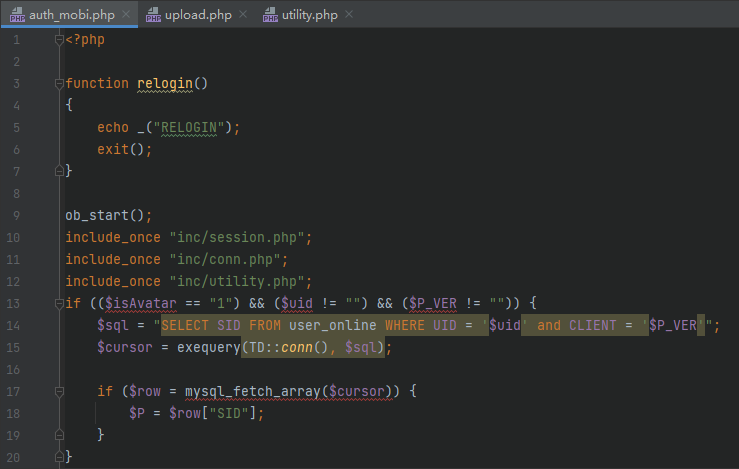
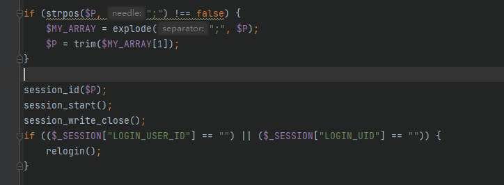
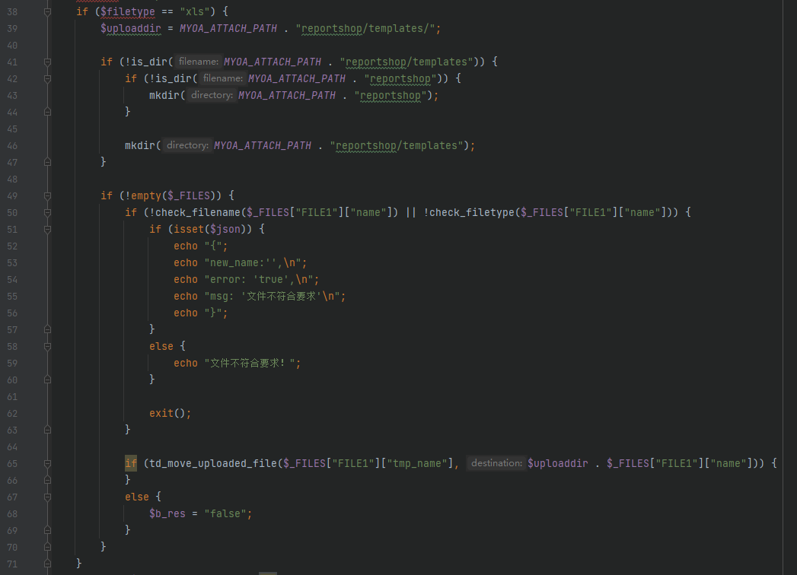
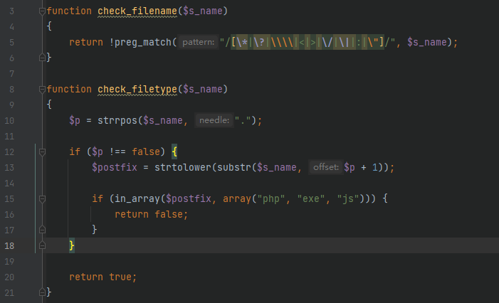

通达OA_11.7_前台RCE_分析
本文仅用于技术讨论与研究，文中的实现方法切勿应用在任何违法场景。如因涉嫌违法造成的一切不良影响，本文作者概不负责。
0x00 漏洞简介
最近在看通达 OA 的相关漏洞，通达 OA 11.7 版本可以通过任意用户登录以及后台的几个漏洞组合 getshell 。
0x01 漏洞影响
通达 OA <= 11.7
0x02 环境搭建
官网可以下到安装包：https://cdndown.tongda2000.com/oa/2019/TDOA11.7.exe
0x03 漏洞分析
任意用户登录
首先我们需要获取后台权限，在文件 mobile/auth_mobi.php

$isAvatar 与 $uid 等变量可以通过 $_GET 或 $_POST 等方式获取，稍微讲一下，后面都有用到
这里包含了一个 inc/conn.php ，进去之后包含 inc/td_config.php ，继续包含 inc/common.inc.php ，这里面可以看到这些变量的得到过程，篇幅问题，这里只展示 $_GET 部分，其余在同文件可以找到

回到上面第一张图，在此处会根据 $uid 的值获取在线用户的 SID 值写入变量 $P，看下面的代码

接下来就是使用 session_id 将 $P 写入 session ，这样就能成功伪造 session
但是这里有一个缺陷，因为是根据 uid 去获取在线用户的 sid 值，那么我们伪造的用户就必须是在线的用户，因此只有在管理员在线的时候才可以使用。
文件上传
接下来我们就是找一处文件上传的位置，可以找到一处为 general/reportshop/utils/upload.php ，这个文件只有登录后才可以访问，配合上面的任意用户登录刚好可用

当 $action 为 upload 时，会根据不同的 $filetype 处理文件，我们先随意看一个，比如第一个 xls 文件

上传类型为 xls 时，首先定义一个上传路径，然后会检查文件名字与文件类型，代码如下

检查文件名排除了利用文件名目录穿越的可能，检查文件类型实际上是在检查文件后缀，设置了一个黑名单，因此这里都是一些安全的过滤
回到上面，检查完之后，会进行文件的移动
1 | |
两个参数，但两个参数都是不可控的，第二个参数虽然拼接了文件名，但是由于上面的文件名和文件类型检测而不可利用
我们跟进 td_move_uploaded_file 函数，看有没有什么可以利用的
1 | |

这里有一个 is_uploadable 函数，跟进看一下，还是在这个文件

主要看对 $FILE_NAME 的处理，首先获取了后缀赋值给 $EXT_NAME ，然后进行判断，首先不能为空，第二是前三个字符不能为 php，还有一个就是不能没有点，没有点走到最后也是会返回 false 的
当满足上述条件时，就可以移动文件
目录穿越
上述其实就是可以实现上传一个后缀不为 php 与 exe与 js 的文件，并且位置是固定的，位置在网站根目录的 attachment 的更下层，但是通达 OA 自身是提供了完整的服务的，包括 nginx 服务，其中的配置中可以找到对 attachment 目录的限制
1 | |

因此我们需要找到办法将上传的文件送出这个 attachment 文件夹
上面说到过，general/reportshop/utils/upload.php 可以会根据上传的类型进行判断，从而执行不同的代码，上面是对 xls 类型文件执行的代码进行分析，他只能将文件上传到一个固定的位置，接下来看到不是 xls 也不是 img 文件格式的处理

大部分代码都和 xls 的处理一样，但上面框起来的部分不一样，这个 $newid 在上面没有定义，因此我们可以通过 GET 或者 POST 的方法传值，也就是我们可控的，$new_id 并没有任何的过滤，直接拼接到了 $s_n 上面，最后拼接到了目标文件上面，因此我们可以通过给 $new_id 设置 ../ 的方式进行目录穿越
因此此处我们可以实现将文件上传到任意的位置
文件包含
上面上传的文件并不可以直接执行 php 文件，因此还需要一个文件包含漏洞进行利用
1 | |
这个文件的前半部分在进行验证 COOKIE ，我们现在是已经可以登录，跳过这部分，直接看下面

一眼就能看到包含的位置，而这个 $url 变量是由上面的 $json 解析之后得到的，$json 可控前面讲过了
这里的 $url 需要满足几个条件，一是不能包含 .. ，相当于禁止了目录穿越，然后又限制了目录只能为如下三个中的一个
1 | |
由于上面有一个目录穿越的漏洞，所以我们可以将文件上传到这几个文件夹下面，从而实现文件包含
最终，通过整条链，我们就可以实现前台 getshell。
0x04 漏洞复现
略
0x05 总结
需要注意的是，此处的登录绕过需要存在对应的用户在线，因此利用方面存在一定的局限性。